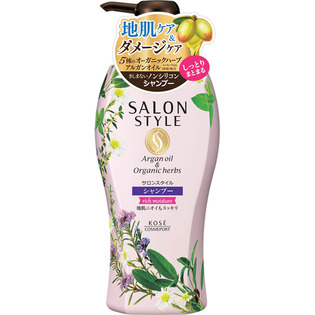

返回列表
产品名称：サロンスタイル シャンプー（リッチモイスチュア）

コーセー サロンスタイル シャンプー（リッチモイスチュア） ５００ｍｌ
メーカー コーセー
JANコード 4971710385694
商品の特徴
地肌ニオイもスッキリ
- 成分・分量
- 水・ラウレス硫酸Na・コカミドプロピルベタイン・アルガニアスピノサ核油・オリーブ果実油・カミツレ花エキス・サフラワー油・セイヨウハッカ葉エキス・ホホバ種子油・BG・EDTA－2Na・PG・PPG－2コカミド・イソプロパノール・オリーブ脂肪酸エチル・クエン酸・グリセリン・コカミドMEA・ジステアリン酸グリコール・ステアルトリモニウムクロリド・ポリクオタニウム－10・ポリクオタニウム－7・メントール・ラウリルベタイン・塩化Na・炭酸水素Na・フェノキシエタノール・メチルパラベン・安息香酸Na・香料
- 用法及び用量
- ○髪と地肌をぬらしてから適量を手にとり、泡立てながら地肌をマッサージするように洗い、よくすすいでください。
○シリーズであわせてお使いいただくことをおすすめします。